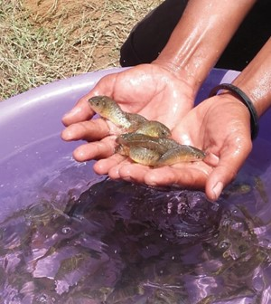
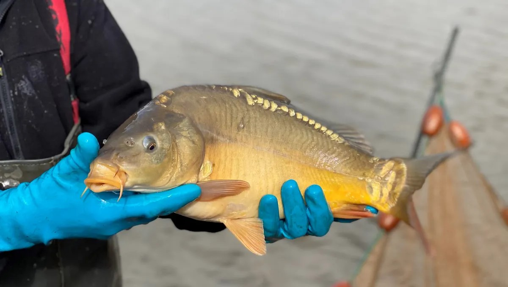
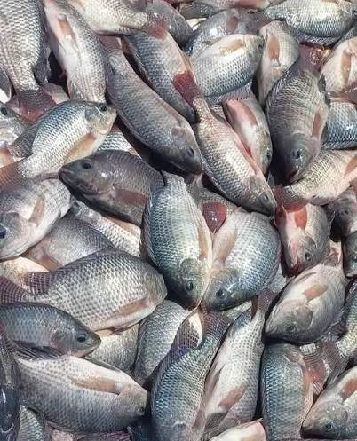

Pisciculture moderne et durable à Madagascar
Royal Fish Mada (RFM) est une entreprise piscicole malagasy spécialisée dans l’élevage et la commercialisation de poissons frais de qualité.
Notre mission est de contribuer au développement de la pisciculture durable à Madagascar tout en proposant des produits sains et accessibles.
Poisson frais élevé dans des conditions contrôlées.
Produit piscicole local de qualité supérieure.
Variété Cyprinus carpio & Oreochromis Niloticus.
Nettoyage et préparation des bassins piscicoles.
Introduction des alevins dans les étangs.
Utilisation de BSF, granulés et provendes.
Contrôle de la qualité de l’eau et de la santé des poissons.
Capture et préparation des produits pour la vente.


